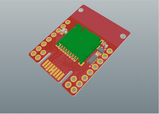
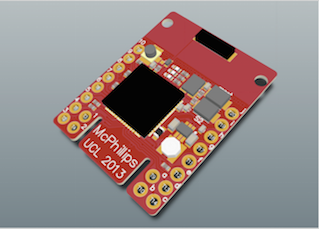
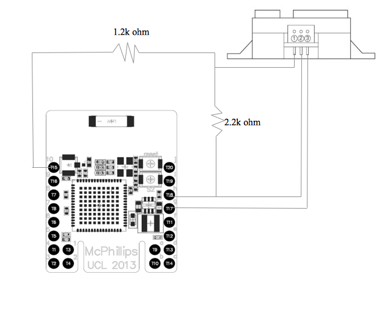
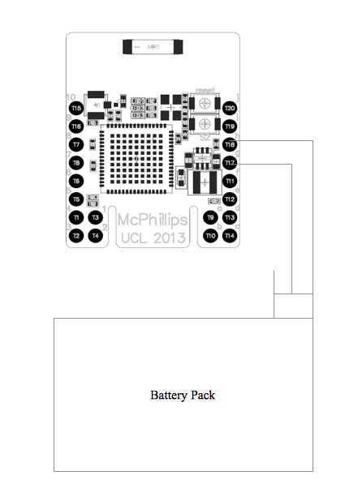
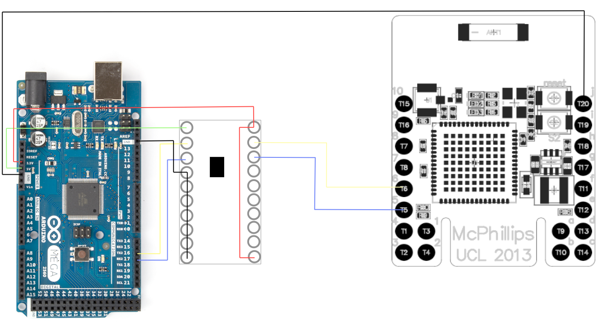

Building the Orange Sensors Network
- Short guide on website registration, how to add sensors, remove them etc.
- Includes all details regarding how to configure hardware to work with the system
Web API
- All documentation and guidelines for using the Node.js API
- Along with examples, if possible
Java API
The Java API offers both public and authenticated access to all sensor data. If you're a user, this means you can restrict your queries to only sensors that belong to you. Here's all you need to get going with the API, and start using the data in your applications.
Download
Before you do anything, make sure you download the API here. All you really need is the orange-java-api.jar, but the source code is included should you wish to experiment for yourself.
Full documentation specification (JavaDoc)
The full documentation page for each class and method can be viewed here.
Read on to see how to initialise your Java project to use the API, and find example code for best approach
Getting Started
Before you begin, you'll need to make sure you have some support for Maven installed. We're using Eclipse as a Java IDE, and downloads for Maven integration are here.
Once in Eclipse, we need to set up a simple Maven project. Press CTRL-N or right-click the Package Explorer before selecting "Other".
Create a new Maven project.
On the next screen, be sure to check 'Create a simple project'. Leave the other settings as they are, and click Next.
Create a simple project.
Next, set up the basic project details. Group ID and Artifact ID are the only fields required, so add these at a minimum and then click Finish.
Initialise the project details
Now we need to edit the pom.xml file to add a dependency for the Cassandra Java Driver. This is a simple process of selecting pom.xml in the Package explorer, choosing the pom.xml tab shown in the main panel, and pasting this code before the closing project tag:
<dependencies>
<dependency>
<groupId>com.datastax.cassandra</groupId>
<artifactId>cassandra-driver-core</artifactId>
<version>2.1.4</version>
</dependency>
</dependencies>
Set the dependencies to add in the Cassandra Java Driver
Now we need to add the API to our build-path. Open the build path panel by right-clicking the project and going to Build Path -> Configure Build Path
Configure the build-path to include the API
From this page, select the 'Libraries' tab and click 'Add External Jars'. Navigate to the orange-java-api.jar file you downloaded earlier, and select it.
Click 'okay' on any remaining windows, and you'll see the Jar appear in the package explorer. Now, we're ready to start writing code. All that's left is to import the API in any classes you'll need to use it in. Go ahead and create a main class and import the API. Read on to find more information on the best practice for using the API.
Import the API
Using the API
All documentation for the API can be found here, so we'll spare the finer details of what each class contains. The important class to know about is OrangeConnection, which contains the majority of data-accessing methods.
The suggested approach to accessing the data is to first retrieve a filtered list of IDs from sensors you want to check data for. This can be done using the "getIDs*" methods, for example getIDsWhere(). Once you have this list, you can then perform operations on it for accessing any element of data, for example the latest reading.
This code demonstrates a use of the API to access and print out data for any sensors whose application is 'Orange Parking', the application used by our example Smart Parking app.
The basics required to retrieve data from the system database.
Hardware
- The Stamp board (Created by Grame McPhillips)
- A Sharp 2Y0A02 Distance Sensor
- A 5V battery pack (or create one like we did in the below section)
- Wiring
- 2.2 and 1.2 ohm resistors
- Soldering Iron
- electrical tape (optional)
- a 3.3V to 5.0 V converter (created by Graeme McPhillips)
- Arduino Mega (other boards are available if you choose to not use a shield)
- The first row from the left is connected to our ground output plug (the one that you attach the ground wire to), the left most connection of the DC-DC converter (outputs the ground) and to the ground of the battery pack.
- The second row is connected to our 5V output plug (the one that will output 5V), a wire connecting the 2nd row to the 4th row, the middle connection of the DC-DC converter (outputs 5V) and our capacitor.
- The third row is connected to our 6V output plug (unused), the right connection of the DC-DC converter (takes in 6V) and the other end of the capacitor.
- The fourth row simply connects the 6V output to our second row.
- The top connection is connected to a 3.3V power supply from the Arduino
- The second wire is connected to 6,T6 which is an RX input
- The third wire is connected to 5,T5, which is a TX output
- The bottom one is simply to enable the board so we feed it a 3.3V signal to "turn it on"
- The top connection is connected to a 5.0V power supply from the Arduino
- The second wire is connected to a TX output on the Arduino
- The third wire is connected to a RX input on the Arduino
- The rest of the wires are all wired together to ground to avoid random signals.
- /contiki/cpu/mc1322x/
- /contiki/examples/
Building the Hardware tutorial:
The following section will show you how to assemble the hardware we used to prepare for coding. We will assume that you have the following things to be able to create the hardware:
Attaching Sensors to the board.
To attach the sensors to the Stamp board, you will have to connect it to the right input. Refer to the
For full documentation on the Stamp board refer to the pdf or use the below diagram:
 
In the top left corner, there are 2 connections 10,T15 and 9,T16. These two connections are for ADC signals, which is the kind of signal produced by infra red sensors.
To run, the infra-red sensor needs a 5V power supply, but we only want a returned 3.3V signal to our ADC channel. To get around this, we have to lower the voltage using ohm resistors. To do this, wire everything up using this circuit diagram:

The 5V power supply can be found on g,T17, the ground can be found on h,T18 and the ADC input can be found on 10,T15.
Creating and attaching the 5V battery
This step is not necessary if you plan to power the device from your computer only. Of course for the parking application, we need a battery.
To create our battery pack, we started off by taking 4 batteries in a prebuilt pack as shown here:

This provides 6V, which is a little too high for our board to handle. To lower the voltage, we attached a board at the back that would allow us to wire a capacitor and a DC-DC converter to lower the voltage. This can be seen in the following picture:

Once the battery has been prepared, we need to create our connectors and attach them to the stamp. First, attach a cable to g,T17. This is the connection where we can input 5V. Second, attach a cable to h,T18. This is the connection to the ground. To help illustrate this, here is a circuit diagram:

Now whenever you need to power your device, simply plug the 5V into the middle connector on and the ground to the right connector on your battery pack.
NOTE: do not power the device using both USB and the battery as this can damage the board.
Connecting the Stamp board to the Arduino Mega
Now that our sensor nodes are ready, its time to wire one of them to the Arduino. As our serial ports only accept and output 3.3V and the Arduino only outputs and accepts 5.0V, we have to do some wiring and attach a voltage converter.
The easiest way to show this is with a circuit diagram:

As you can see, a few things are going on here. The 3.3V side of the voltage converter has 4 connections:
The 5.0V side of the voltage converter also has 4 connections:
Finally, connect the ground of the Stamp, j,T20 to the ground of the Arduino as shown
NOTE: the TX output has to be directly across from the RX input on the volt converter, as we want RX to be connected to TX and vice versa.
Now that you have all the hardware set up, you are now ready to do some coding.
Coding firmware onto the Hardware tutorial:
This section will be focused installing software on your computer/boards to allow you to run code on the hardware.
Step 1: installing Contiki OS
To use Contiki, you can do one of two things. You can install the Contiki OS as we did (recommended) or you could just download the folder with all the libraries.
To download Contiki, go to their website: http://www.contiki-os.org/download.html
Advantages to installing the OS includes having a node simulator and easier upload of code. If you are using Windows I especially recommend installing the OS, as it is essentially a version of Ubuntu, which will make coding and prepping the hardware much easier.
Once you have installed the OS/library, you will need to get an updated version of the libraries for mc1322x, as they are outdated on the Contiki website. Download the github libraries from here and replace them with your old contiki libraries: https://github.com/malvira/libmc1322x/wiki.
Once you have the newer libraries, I would recommend taking a look through the different libraries. There is a lot of stuff going on, but the important directories are:
Step 2: uploading code on the Stamp Board
now that we have our software ready, lets try and upload a test code. If this is your first time uploading to a specific board, you need to first wipe the board. To do this, navigate to /contiki/cpu/mc1322x/tools/ftditools/ and use the make file to make an upload file of the bbmc.c file.
to upload this file to the board type the following string into terminal (make sure you are in the tools directory):
sudo ./mc1322x-load.pl -f /home/user/contiki-2.7/cpu/mc1322x/tools/ftditools/bbmc.bin -t /dev/ttyUSB1
The mc1322x-load.pl is a runnable file that uploads bin files to the board. make sure you get the right port for your USB. Ours happened to be ttyUSB1.
Now that this code has been uploaded, the board is wiped and you are able to add new code. If you look in the tests folder, there are loads of test files. to make them usable, run the make file using this command:
make BOARD = freescale-usb
if you do not have the freescale-usb.h header file, get it from here:
add it to /contiki/cpu/mc1322x/board/ and change the Makefile.board to include it at the top under ALL_BOARDS
once you've clicked make, redirect yourself back to tools and run this code to test your ADC channels:
sudo ./mc1322x-load.pl -f /home/user/contiki-2.7/cpu/mc1322x/tests/adc_freescale-usb.bin -t /dev/ttyUSB1
click the reset button on the board (top button) and your adc readings should now be displayed. channels 1-7 should display junk, while channel 0 displays ADC 0.
To run the code we used for the project. Find the c file named u1u2-loopback.c loopback and save it in your Contiki tests folder. (if you used our Contiki library on the github, it will already be in there).
now that you know how to upload programs, its time to start coding. You will now have to read through the libraries and learn how the header files should be used. You can use our code here to take an ADC value and send it via serial to the Arduino:
Step 3: uploading code on the Arduino
Uploading code on the Arduino is incredibly simple. Simply install the Arduino program, select your usb connected board under tools/board and you are ready to go. Here is some code we wrote to read the serial port and write it to our computer:
int incomingByte = 0; // for incoming serial data
void setup() {
Serial.begin(115200); // opens serial port, sets data rate to 115200 bps
Serial3.begin(115200);
}
void loop() {
// send data only when you receive data:
if (Serial3.available() > 0) {
// read the incoming byte:
incomingByte = Serial3.read();
//Serial.println(incomingByte);
}
//use this code if the readings are off:
//Serial.print("a1b2c3d4;1:");
//Serial.print(150 - (incomingByte - 133) * 2 );
//Serial.println(";");
Serial.print("a1b2c3d4;1:");
Serial.print(150 - (incomingByte - 97)*8 );
Serial.println(";");
}
We used this to send data to our computer which then handled the UDP section. As you can see we are printing a1b2c3d4; which is our identifier, followed by a 1: followed by what the sensor is reading followd by a ;. This is the format the authentication server expects and will reject it if you dont follow the format.
identifier;sensorID:sensorReading;
Step 4: Sending the data with UDP
To handle UDP communications, we wrote a simple java program that reads the message from the Arduino port and sends it off every 5 seconds. You can find this code on the Github. Make it into a java project in eclipse.
If the console prints the data and then prints sent, you know that the code is working and that it is updating to the server. This will then within 15-30 seconds update the specified sensor on the website.